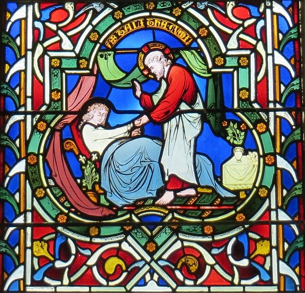

La Bouonne Nouvelle s'lon Mar, Chapitre 5
Et il' arrivîdrent à l'aut' bord d'la mathe dans la contrée des Gadathènes, et quand i' d'sembèrtchit, d'un co un houmme auve un mauvais esprit vînt l'achîtrer. Ch't houmme-chîn d'meuthait dans l'chînm'tchiéthe et nou n'adonnait pon à l'amather même atout des chaînes. Ch'est en tchi il avait 'té amathé bein des fais atout des fièrs et des chaînes et il' avait halé les chaînes en mios et bûchi les fièrs en buts et nus n'pouvaient l'apaîsi. Et i' 'tait tréjous à plieuther et s'dêchither atout des pièrres, niet' et jeu dans les montangnes et l'chînm'tchiéthe. Et quand il êpyit Jésû d'au liain, i' couothit à li et fit eune révéthence et briyit d'eune grande vouaix, "Tch'est qu'tu'as à faithe auve mé, Jésû, Fis du Tout-Piêssant? J'té c'mande par l'Bouôn Dgieu qué tu n'm'afflyige pon!" Car i' li'avait dit, "Vé-t-en, mauvais esprit, hors dé ch't houmme-chîn!" Et i' l'tchestchionnit, "Tch'est qu'est tan nom?" et i' rêponnit, "Man nom est Racachie, car y'en a un tas d'nous."
Et i' lî pliaidgit à seule fîn qu'i' n'l'envyîsse pon hort la contrée. Et y'avait dans les côtis un fièr troupé d'bêtes à saie à y paître, et touos les dêmons lî'app'lîdrent, "Envyie-nous dans les bêtes à saie, et j'allons entrer dans ieux." Et d'un co Jésû les lâtchit et les mauvais esprits lus dêhalîdrent et entrîdrent dans les bêtes à saie, et l'troupé s'drotchit ava l'côti dans la mé. Y'en avait dans les deux mille et i' fûdrent n'yées. Et les cheins tchi souongnaient les bêtes happîdrent la pathe et racontîdrent chenna en ville et dans les clios, et nou vînt vaie chein tchi s'est adonné. Et nou veint à Jésû et êpyit l'leuné assis et habilyi et r'grée - ch'est en tchi ch't'î-chîn tch'avait 'té afflyigi d'la racachie - et nou fut êffrédolé. Et les cheins tch'avaient veu tout, lus racontîdrent chein tchi s'tait adonné auve lé leuné et entouor les bêtes à saie, et nou c'menchit à lî dithe dé fichi l'camp hors pays.
Et il embèrtchit dans l'baté, mais l'leuné 'tait à lî crier dé l'emm'ner acanté li. Mais Jésû n'lî pèrmînt pon mais lî dit, "Rentre siez té, à tes anmîns, et di-lus les mangnifiques choses qu'lé Seigneu t'a fait et la bouônté qu'i' t'a mouontré." Et i' s'en fut et s'êcantit à procliâmer dans les Dgiêx-Villes coumme tchi qu'Jésû accomplyit des mèrvelles pouor li, et tout l'monde lus êmèrvilyîdrent.
 Et Jésû rallit à l'aut' bord dans l'baté et y'avait là un fliotchet d'monde au bord d'la mé. Et né v'chîn iun des grands hommes d'la sŷnnagogue tch'avait nom Jairus tchi l'vit et tchi s'prostèrnit l'avant à li en l'adréchant et r'adréchant, "Ma p'tchiote est sus l'pus - mais s'tu veins, tu pouôrras lî donner ta main à seule fîn qu'ou sait êpaîngnie et ou viv'tha." Et i' s'en fut acanté li. Et y'avait un fliotchet d'monde tchi l'siévaient et l'tchaquenardaient. Et eune femme tch'avait eune pèrte dé sang d'pis douze ans et tch'avait suffâtchi souos un tas d'docteurs et tch'avait dêpensé tout san bein sans aver d'èrmiède, mais s'en 'tait empiéthie, oulle avait ouï pâler d'Jésû. Ou vînt acanté l'fliotchet d'monde driéthe li, et ou paûtchit s'n habit. Ch'est en tchi, ou dit, "Si j'paûque raîque sén habit, v'là tchi m'èrdgéthitha." Et d'un co sa pèrte dé sang sé s'tchit et ou rêalîsit qu'san corps avait 'té dgéthi du ma. Et d'siette Jésû rêalîsit qu'san pouvé avait 'té fait sèrvi et i' s'èrtouônnit au monde et dit, "Tchi qui m'a paûtchi l'habit?" Et ses discipl'yes lî dîdrent, "Vai-tu coumme tchi qu'lé monde sont à t'tchaquenarder, épis tu dis, 'Tchi qui m'a paûtchi?'" Et i' dgettit à l'entou à seule fîn d'vaie tchi qui l'avait fait. Et la femme, tch'avait peux et trembliait viyant qu'ou savait chein tch'avait 'té fait à lyi, ou vînt s'agenouoilli l'avant à li et lî dit la véthité. Et i' lî dit, "Ma fil'ye, ta fouai t'a r'dgéthi; vai en paix et sai dgéthie d'tan ma."
Et Jésû rallit à l'aut' bord dans l'baté et y'avait là un fliotchet d'monde au bord d'la mé. Et né v'chîn iun des grands hommes d'la sŷnnagogue tch'avait nom Jairus tchi l'vit et tchi s'prostèrnit l'avant à li en l'adréchant et r'adréchant, "Ma p'tchiote est sus l'pus - mais s'tu veins, tu pouôrras lî donner ta main à seule fîn qu'ou sait êpaîngnie et ou viv'tha." Et i' s'en fut acanté li. Et y'avait un fliotchet d'monde tchi l'siévaient et l'tchaquenardaient. Et eune femme tch'avait eune pèrte dé sang d'pis douze ans et tch'avait suffâtchi souos un tas d'docteurs et tch'avait dêpensé tout san bein sans aver d'èrmiède, mais s'en 'tait empiéthie, oulle avait ouï pâler d'Jésû. Ou vînt acanté l'fliotchet d'monde driéthe li, et ou paûtchit s'n habit. Ch'est en tchi, ou dit, "Si j'paûque raîque sén habit, v'là tchi m'èrdgéthitha." Et d'un co sa pèrte dé sang sé s'tchit et ou rêalîsit qu'san corps avait 'té dgéthi du ma. Et d'siette Jésû rêalîsit qu'san pouvé avait 'té fait sèrvi et i' s'èrtouônnit au monde et dit, "Tchi qui m'a paûtchi l'habit?" Et ses discipl'yes lî dîdrent, "Vai-tu coumme tchi qu'lé monde sont à t'tchaquenarder, épis tu dis, 'Tchi qui m'a paûtchi?'" Et i' dgettit à l'entou à seule fîn d'vaie tchi qui l'avait fait. Et la femme, tch'avait peux et trembliait viyant qu'ou savait chein tch'avait 'té fait à lyi, ou vînt s'agenouoilli l'avant à li et lî dit la véthité. Et i' lî dit, "Ma fil'ye, ta fouai t'a r'dgéthi; vai en paix et sai dgéthie d'tan ma."

Coumme i' pâlait, un houmme vînt d'siez l'grand houmme d'la sŷnnagogue et dit, "Ta fil'ye a mouothi; pouortchi qu'tu'es acouo à talbâter l'Maît'?" Et d'un co, quand Jésû ouït chein qu'i' dit, i' dit au grand houmme d'la sŷnnagogue, "N'ai pon d'êffrai, mais crai!" Et i' n'allouit pon ès aut's dé l'siéthe, excepté Pièrre et Jacques et Jean l'fréthe à Jacques, et i' vînt à la maîson du grand houmme d'la sŷnnagogue, et v'là tch'il appèrchut un camas d'plieuth'thie et d'piaill'lie, et il entrit et lus dit, "Pourtchi qu'ou faites un té camas et plieuthez d'même? La p'tchiote n'a pon mouothi; ch'est qu'ou dort."
Et nou s'motchit d'li. I' cârrit tout l'monde et am'nit l'péthe à la mousse, et sa méthe, et les cheins acanté li, et il entrit dans la chambre où'est qu'ou 'tait couochie. Et i' prînt la main à la p'tchiote et lî dit, "Talitha cumi," v'là tchi veurt dithe, "Ma fil'ye, lève-té!"
Et dêliêment la fil'ye sé l'vit et sauticotit - viy'-ous, oulle avait douze ans - et i' fûdrent êmèrvilyis. Et i' lus c'mandit dé n'rein dithe, mais d'donner dé tchi à mangi à lyi.
Viyiz étout:
- La Bibl'ye
- La Bouonne Nouvelle s'lon Mar: 1
- La Bouonne Nouvelle s'lon Mar: 2
- La Bouonne Nouvelle s'lon Mar: 3
- La Bouonne Nouvelle s'lon Mar: 4, i-xxxiv
- La Bouonne Nouvelle s'lon Mar, Chapitre 4, vèrsets iii-ix
- La Bouonne Nouvelle s'lon Mar, chapitre 4, vèrsets 35-41
- La Bouonne Nouvelle s'lon Mar: 6
- La Bouonne Nouvelle s'lon Mar: 7
- La Bouonne Nouvelle s'lon Mar: 8
- La Bouonne Nouvelle s'lon Mar: 9
- La Bouonne Nouvelle s'lon Mar, Chapitre 9, vèrsets 1-13
- La Bouonne Nouvelle s'lon Mar: 10
- La Bouonne Nouvelle s'lon Mar, Chapitre 11, vèrsets 1 à 11
- Lé mithacl'ye du fidgi s'lon Mar
- La Bouonne Nouvelle s'lon Mar: 11
- La Bouonne Nouvelle s'lon Mar: 12
- La Bouonne Nouvelle s'lon Mar: 13
- La Bouonne Nouvelle s'lon Mar: 14
- La Bouonne Nouvelle s'lon Mar, Chapitre 15
- La Bouonne Nouvelle s'lon Mar, Chapitre 16